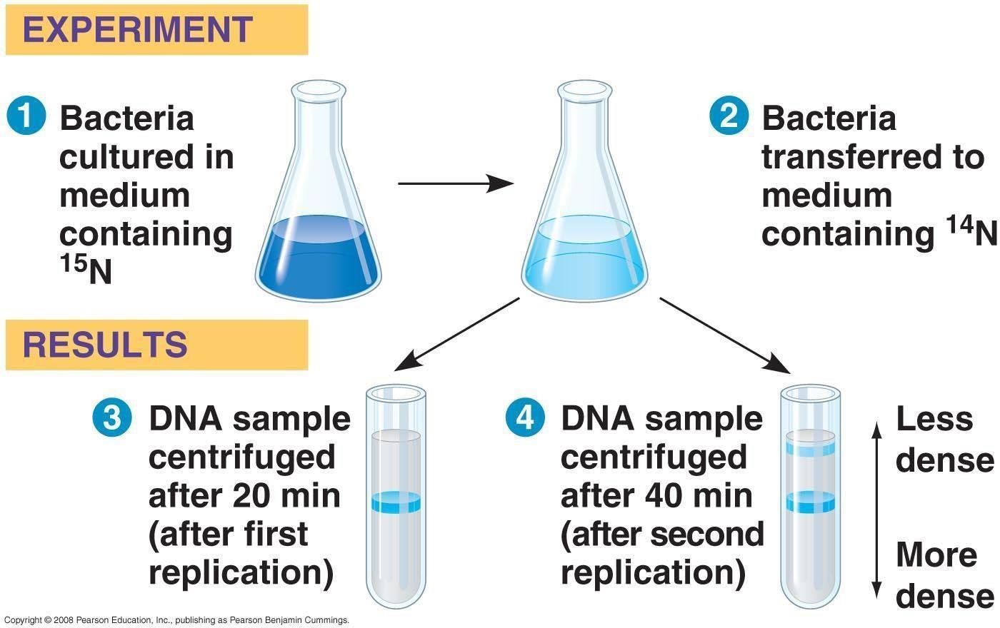
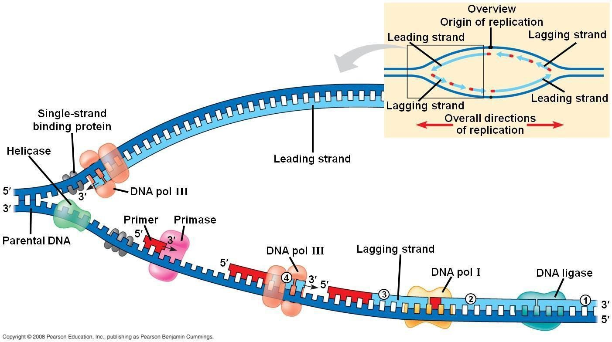
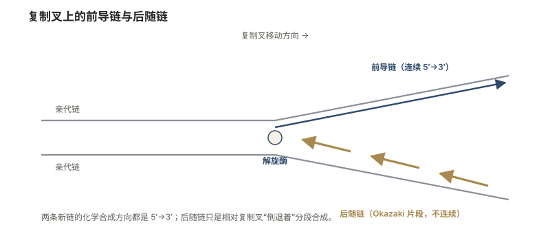

BIO103 · 第 9 章
DNA 复制
DNA Replication
虚线下划线为术语；悬停查看中文、英文与释义，完整词典见“术语”。
本章目录
本讲回答“DNA 如何复制并保持遗传信息”这一问题：从半保留模型与 Meselson–Stahl 实验，到复制叉、聚合酶、前导链与后随链，最后落到端粒与端粒酶。
本章要点
- Watson 与 Crick 由碱基互补推出复制机制；Meselson–Stahl 用 ¹⁵N 与 CsCl 密度梯度离心证明半保留复制。
- 复制叉是复制泡中正在合成 DNA 的分支点；复制几乎总是双向的。
- 复制子是单个复制起点及其全部调控元件；原核整个染色体为一个复制子，真核有多个起点。
- DNA 聚合酶只能把核苷酸加到已有链的 3′-OH 上，因此需要 RNA 引物，且合成方向只能是 5′→3′。
- 前导链连续合成；后随链以 Okazaki 片段不连续合成，再由 DNA 连接酶连接。
- 线状染色体末端存在“末端复制问题”，由端粒与端粒酶解决；端粒酶仅在生殖细胞中活跃。
9.1 半保留复制的提出
1953 年 Watson 与 Crick 在提出双螺旋后指出：既然两条链以互补方式携带相同的信息，那么复制只需要一个把两链分开、再分别按每条单链拷贝的机制。这一推论把“复制”从抽象的遗传学概念变成了可检验的分子模型。
当时并行存在两种可区分的假说。保守复制（conservative replication）认为，亲代双链在充当模板后重新结合，恢复原来的亲代双螺旋，新合成的两条链则彼此配对形成全新的分子。半保留复制（semi-conservative replication）认为，亲代两条链分开，各自作为合成新链的模板，因此每个子代分子都由一条旧链与一条新链组成。
两种模型的差别不在于“是否用模板”，而在于“子代分子中旧链如何分配”。这正是 Meselson 与 Stahl 实验要回答的问题。
L11 p.4–5
9.2 Meselson–Stahl 实验
Matthew Meselson 与 Franklin Stahl 于 1958 年用同位素标记解决了这个问题。他们把 E. coli 放在以 ¹⁵NH₄Cl 为唯一氮源的培养基中培养，使 DNA 中的氮全部换成重的 ¹⁵N（自然界丰度高的是 ¹⁴N），从而提高了 DNA 的密度。
随后把细菌转到含 ¹⁴N 的普通培养基中，让复制继续进行，并在不同世代取样。分离手段是氯化铯密度梯度离心equilibrium density gradient centrifugation in CsCl：离心时 CsCl 形成密度梯度，¹⁴N-DNA 与 ¹⁵N-DNA 因密度不同而停在不同的带位，可以清楚区分重带与轻带。

Clean vector diagram of the Meselson-Stahl experiment: three centrifuge tubes side by side for generation 0, 1 and 2, each tube showing band positions in a CsCl density gradient, with a single heavy band at generation 0, a single hybrid band at generation 1, and two bands of equal intensity, hybrid and light, at generation 2; labels for 15N-DNA, hybrid DNA and 14N-DNA. Flat 2D, thin 1.5 px strokes, muted slate blue and warm grey palette, white background, English labels, no cartoon, no gradient, no shadow.
结果与半保留模型完全吻合：第一代只出现一条杂交带（一条 ¹⁵N 旧链 + 一条 ¹⁴N 新链）；第二代出现杂交带与轻带，且两者比例相等；到第三代，轻带比例进一步升高，出现“最轻”的带。保守模型无法解释第一代为何没有重带与轻带两条分离的条带。
L11 p.6–8
9.3 复制叉、复制泡与复制子
复制泡中正在合成 DNA 的分支点称为复制叉replication fork。一个复制泡可以有一个或两个复制叉，对应单向或双向复制；实际上复制几乎总是双向的。E. coli 的环状染色体在复制时形成“θ 结构”（theta structure）：两条亲代链分开，形成像希腊字母 θ 的复制泡，这种复制方式称为 θ 复制。
复制子replicon由复制起点（origin of replication）及其全部调控元件组成，是“从一个起点出发、走向一个终点”的独立复制单位。原核细胞只有一条染色体、一个复制起点，因此整个染色体就是一个复制子。E. coli 基因组约 480 万个碱基对，在不到 40 分钟内完成复制。起始蛋白（initiator）与复制起点（replicator）结合，即可刺激复制起始并使相关 DNA 复制。
真核的情况不同。用 TEM 观察培养的中国仓鼠细胞，可看到染色体 DNA 上分布着多个复制泡，红色箭头标出复制叉的移动方向。真核基因组可达 60 亿 bp，若只有一个起点将无法在数小时内完成，因此真核 DNA 从多个起点复制，每个起点只负责一段，再由复制叉向两侧推进。
Clean vector diagram of a theta replication bubble on a circular DNA molecule: two replication forks moving outward in opposite directions from a single origin, newly synthesized strands drawn as dashed lines, and labels for origin of replication, replication fork, parental strand and daughter strand. Flat 2D, thin 1.5 px strokes, muted slate blue and warm grey palette, white background, English labels, no cartoon, no gradient, no shadow.
L11 p.9–11
9.4 DNA 聚合酶与引物
复制由 DNA 聚合酶催化。以 E. coli 为例：DNA 聚合酶 IIIDNA polymerase III以亲代 DNA 为模板，把核苷酸共价加到已有 DNA 链或 RNA 引物的 3′-端，是主要的延伸酶；DNA 聚合酶 IDNA polymerase I负责从 5′-端移除引物中的 RNA 核苷酸，并替换为 DNA 核苷酸。
引物（primer）是一段约 10 个核苷酸的单链核酸，与模板链碱基配对，用于启动 DNA 复制。为什么必须有引物？因为 DNA 聚合酶不能从头开始：它只能延长一个已经存在的 3′-OH，而不能把两个游离的 dNTP 直接连起来。RNA 引物由引物酶（primase）合成，其存在正是“聚合酶只能延伸、不能起始”这一化学限制的解决方案。
真核生物有多种 DNA 聚合酶，分工更细，且需要更多辅助蛋白参与。讲义未逐一列出其名称与功能，只强调“类型不同且复杂”。
L11 p.13, p.15–16
9.5 聚合反应的化学机制与方向性
聚合的化学本质是一次亲核攻击：生长链末端的 3′-羟基攻击进入的 dNTP 的 α-磷酸，形成磷酸二酯键，同时释放焦磷酸（PPi）。随后 PPi 被水解，使反应在生理条件下不可逆——这是复制能够持续向一个方向推进的热力学基础。
底物是四种脱氧核苷三磷酸：dATP、dGTP、dCTP、dTTP。进入的核苷酸先与模板碱基形成氢键配对，再由聚合酶催化形成磷酸二酯键。配对正确与否由聚合酶的结合口袋检查，这也是复制保真的第一道关卡。
关键限制是方向：DNA 链只能沿 5′→3′ 方向延伸，即新链的 3′-端不断向前生长，而模板链被按 3′→5′ 方向阅读。速度上，细菌约每秒 500 个核苷酸，人类约每秒 50 个核苷酸。
DNA 聚合酶还有第二项功能：外切核酸酶校对exonuclease proofreading。当加错核苷酸时，聚合酶的 3′→5′ 外切酶活性把错误核苷酸切掉，再重新加上正确的。讲义把聚合酶的功能概括为三条：按模板选择并聚合正确的 dNTP；以 3′→5′ 外切酶活性校对并修复错误；只能加到引物或生长链的游离 3′-端，绝不能加到 5′-端。

L11 p.14, p.16–17
9.6 前导链、后随链与 Okazaki 片段
问题在于：DNA 的两条链是反平行的，而所有合成都只能是 5′→3′。因此两条新链不可能以同一方向、连续地同时合成。细胞的解决办法是半不连续复制semi-discontinuous replication。
前导链leading strand的合成方向与复制叉前进方向一致，因此可以随着复制叉的推进连续延伸。另一条新链称为后随链lagging strand，它的 5′→3′ 方向与复制叉前进方向相反，只能等模板暴露出一段后，分段合成。
这些不连续的短片段称为 Okazaki 片段Okazaki fragments：原核中约 1000–2000 bp，真核中约 100–200 bp。每个片段都有自己的 RNA 引物；随后 Pol I 用 DNA 替换引物，DNA 连接酶（DNA ligase）把相邻片段共价连接，后随链才成为完整的一条链。


绘图提示词
Clean vector diagram of a replication fork: parental duplex on the right opening into two template strands, leading strand synthesized continuously toward the fork, lagging strand synthesized away from the fork as three numbered Okazaki fragments each starting with a short RNA primer, helicase at the fork, and DNA ligase joining fragments. Flat 2D, thin 1.5 px strokes, muted slate blue and warm grey palette, white background, English labels, no cartoon, no gradient, no shadow.
L11 p.17–18
9.7 复制体各蛋白的分工
把上述步骤串起来，原核复制叉上至少需要以下活性，讲义按操作顺序给出：
- 解旋酶helicase：解开双螺旋，并激活引物酶。
- 单链结合蛋白single-stranded binding protein：稳定已解开的单链模板，防止其重新配对或被降解。
- 引物酶primase：被解旋酶激活后合成 RNA 引物。
- DNA 聚合酶 III：延伸前导链，并逐个完成 Okazaki 片段。
- DNA 聚合酶 I：切除引物并以 DNA 填补，留下可被连接的 3′-端。
- DNA 连接酶：把片段的 3′-端与下一片段的 5′-端连成磷酸二酯键。
- 拓扑异构酶：在复制叉前方释放解旋产生的超螺旋张力。
讲义用七步描述了后随链的成熟过程：引物酶先合成引物；Pol III 加核苷酸形成第一个 Okazaki 片段；Pol III 读到下一个引物后脱落；第二个片段被引发并延伸至第一个引物的位置；Pol I 用 DNA 替换引物，在第二个片段末端留下游离 3′-端；连接酶把第二个片段的 3′-端与第一个片段的 5′-端连接；该区域的后随链至此完成。
L11 p.19–22
9.8 端粒与端粒酶
线状染色体带来一个聚合酶无法解决的问题，称为末端复制问题：后随链最末端的 RNA 引物被去除后，没有上游的 3′-OH 可供 DNA 聚合酶延伸，因此这段 DNA 无法被 DNA 填补。若每轮复制都如此，编码序列会逐代缩短。
真核染色体末端的特殊序列称为端粒telomere。端粒是非编码 DNA，不含基因，由一段短序列的多次重复构成（例如 TTAGGG 重复 100–1000 次），加在 DNA 末端起“帽”的作用，保护基因不被侵蚀。原核 DNA 是环状的，没有末端，因此没有端粒。
端粒酶telomerase解决末端复制问题：它是一种含 RNA 的蛋白质复合物，以自身携带的 RNA 为模板，通过逆转录合成 DNA，把端粒恢复到原有长度，补偿复制造成的缩短，从而防止编码 DNA 丢失。端粒酶只在生殖细胞中活跃，在体细胞中不活跃——这解释了体细胞端粒随分裂逐渐缩短的现象。
Clean vector diagram of telomerase action at a chromosome end: a linear chromosome with a TTAGGG repeat tail, telomerase drawn as a protein-RNA complex whose RNA template base-pairs with the telomere overhang, new TTAGGG repeats added by reverse transcription, and the extended 3' overhang shown before and after. Flat 2D, thin 1.5 px strokes, muted slate blue and warm grey palette, white background, English labels, no cartoon, no gradient, no shadow.
L11 p.23–26
9.9 真核复制的特殊性与保真
真核复制比原核复杂，讲义归纳为三点：其一，真核使用多种 DNA 聚合酶，并有更多蛋白与酶参与；其二，真核 DNA 从多个起点复制；其三，线状染色体的末端对复制机器构成特殊问题，需要端粒与端粒酶。
此外，真核复制还受染色质状态限制：模板是缠在组蛋白上的染色质，复制时必须同时处理核小体的解离与重新组装，因此需要大量组蛋白；复制只发生在细胞核内的 S 期，而不能像细菌那样与转录同时进行。
保真由两层机制保证：DNA 聚合酶 III 的 3′→5′ 外切酶校正在掺入的瞬间纠错；错配修复酶在复制后扫描并替换仍存在的错误配对。两层机制叠加，使最终错误率远低于聚合酶单独的错配率。
L11 p.11, p.15, p.27–28